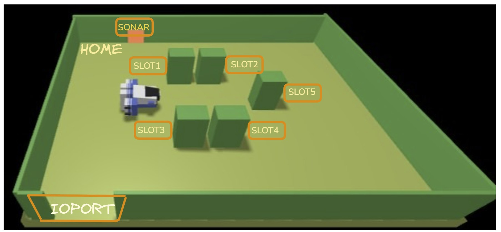

VirtualRobotUsage25¶
Verso l’uso del VirtualRobot¶
Procediamo in modo top-down definendo le interazioni .
Protocolli
L’applicazione vuole comunicare con il robot senza conoscere i dettagli della comunicazione.
A tal fine ricordiamo unibo.basicomm23.interfaces.Interaction.
Per un esempio si veda: TestMovesUsingWs.java, in cui i comandi sono esprressi in cril.
Informazioni da WEnv
L’applicazione potrebbe voler ricevere le informazioni di stato dovute al robot ( (Messaggio di stato) e da WEnv in forma di eventi
Comandi di movimento
L’applicazione vorrebbe inviare al robot i comandi di movimento come dispatch
Console
L’applicazione vorrebbe rendere disponibile ad un utente umano una console per inviare comandi al robot e per visualizzare ogni Messaggio di stato
Si veda NaiveGui.html
:
All possono corrispondere diversi tipi di componenti software che ne realizzano il significato in termni di struttura, interazione e funzionamento.
Nel seguito, introduciamo i seguenti componenti:
VrobotLLMoves24: Robot come POJO a eventi qak¶
un POJO che può possedere un di tipo ActorBasic
che realizza i comandi di movimento definiti dalla interfaccia public interface IVrobotLLMoves {
//Ispirate da VirtualRobot23
public void turnLeft() throws Exception;
public void turnRight() throws Exception;
public void forward( int time ) throws Exception;
public void backward( int time ) throws Exception;
public void halt() throws Exception;
//Nuove operazioni
public boolean step(long time) throws Exception;
}
Questo componente:
|
VrobotHLMoves24: Robot come POJO a eventiqak e stepAsynch¶
un POJO che opera come VrobotLLMoves24 con le segeunti differenze:
|
vrqak: Robot come microservizio-base¶
un MICROSERVIZIO che:
|
BasicRobot24: Robot come agente evoluto¶
un AGENTE SITUATO che realizza un robot che:
|
AI-Overview dei componenti-robot¶
Per un ulteriore sommario (prodotto dalla AI), si veda: VirtualRobotUsage25Survey.
VrobotLLMoves24¶
Definiamo un adapter (VrobotLLMoves24) che converta comandi di movimento in comandi per il robot in cril e che trasformi i messaggi di stato in eventi applicativi.
Questo adapter introduce anche una nuova mossa:
step(time:int)(si veda step)
{kind=link}
Esempi di uso di VrobotLLMoves24¶
Progetto
Gli esempi sono elencati in ordine crescente di ‘astrazione’.
: il supporto VrobotLLMoves24 fornisce metodi per muovere il robot usando il linguaggio cril ed emette informazioni (messaggi ed eventi) nel caso abbia un actorqak come owner.
L’ capace di svolgere compiti applicativi tenendo conto di ‘dati sensoriali’ provenienti dal robot e dall’ambiente.
: esempi ‘evoluti’ usano il metodo che può rendere più semplice la progrewttazione e la realizzazione di applicazioni.
: il metodo viene realizzato in modo sincrono dal supporto VrobotLLMoves24 e viene realizzato in modo asincrono dal nuovo supporto VrobotHLMoves24 che estende il linguaggio comprensibile al robot con Il linguaggio aril.
: gli esempi costituiscono la per la defiizione di un micro-servizio (Il microservizio vrqak24) che permettere l’uso remoto del robot da parte di componenti applicativi mediante Il linguaggio aril.
Robot come agente che provoca eventi¶
Un programma Java che usa il supporto senza owner qak. Le informazioni emesse dal supporto NON sono visibili a livello applicativo, ma
possono essere visualizzate ponendo |
|
Un programma Java che usa il supporto senza owner qak e muove il robot
lungo il perimetro (privo di ostacoli) della stanza, inviando un comando |
|
Un attore qak che opera come owner di VrobotLLMoves24 eseguendo mosse-base che provocano l’emissione delle seguenti info: {"endmove":"true","move":"turnLeft"}
{"sonarName":"sonar1","distance":-4,"axis":"y"}
{"collision":"moveForward","target":"wallRight"}
{"endmove":"false","move":"moveForward-collision"}
|
Robot come agente proattivo-reattivo¶
Un attore qak che opera come owner di VrobotLLMoves24.
Induce il robot a percorrere il boundary della stanza (SUPPOSTO PRIVO DI OSTACOLI)
fermandolo per Le informazioni emesse dal supporto sono percepite a livello applicativo come: Dispatch vrinfo : vrinfo(MOVE,T) "inviato dal supporto dopo mossa ok "
Dispatch vrinfo : vrinfo(T,collision) "inviato dal supporto dopo mossa ko "
Event vrinfo : vrinfo(obstacle,unknown) "emesso dal supportp dopo collisione"
Event obstacle : obstacle(unknown) "emesso dal supporto dopo mossa ko"
L’owner usa il comando e invia un |
|
Un attore qak che opera come vrusage25A.qak usando il supporto VrobotHLMoves24 ed il comando da questi definito, che implica l’invio all’owner di un messaggio di reply da parte del supporto. Request step : step(TIME) //LOGICAMENTE eseguito da stepAsynch
Reply stepdone : stepdone(V) for step //emesoo dal supporto
Reply stepfailed : stepfailed(DURATION, CAUSE) for step //emesoo dal supporto
Ciò ‘libera’ l’owner dall’onere di generare |
Il microservizio vrqak24¶
Definiamo un servizio Vrqak24 per permettere l’uso remoto del VirtualRobot23.
Per un esempio, si veda: vrqak24.qak.
Questo servizio può costituire il punto di partenza per la realizzazione di un servizio più esteso, che includa anche la gestione di uno specifico robot fisico. (d’ora in poi denominato )
Definiamo un nuovoadapter (VrobotHLMoves24)
VrobotHLMoves24¶
Questo adapter opera come VrobotLLMoves24 con due differenze:
introduce comandi nel Il linguaggio aril (Abstract Robot Interaction Language)
permette l’invio di un comando basato sulle seguente specifica (si veda l’esempio vrusage25B.qak):
Request step : step(TIME) Reply stepdone : stepdone(V) for step Reply stepfailed : stepfailed(DURATION, CAUSE) for step
Il linguaggio aril¶
Poichè l’uso di un robot virtuale è solo un passo intermedio verso un robot fisico, che potrebbe avere un linguaggio di comando diverso, può essere opportuno introdurre un linguaggio di comando ‘technology-independent’, che denominiamo (Abstract Robot Interaction Lanaguage) con cui esprimere i comandi-base di spostamento con la sintassi che segue:
MOVE = w | s | l | a | r | d| h | p
w : muove avanti per 2500 msec
s: muove indietro per 2500 msec
l,a: gira a sinistra di 90 per 300 msec
r,d: gira a destra di 90 per 300 msec
p: step asincrono per 370 msec
Dispatch cmd : cmd( M ) "aril M=MOVE
Mappa della stanza¶
Il concetto di viene formalizato introducendo una coppia di coordinate cartesiane che identifica una cella della mappa. |

|
Muovere il robot con mossa step(T) con tempo T tale da spostare il robot (con velocità prefissata)
di uno spazio D, permette di costruire una formata da celle quadrate DxD.
Ad esempio:
0 1 2 3 4 5 6 7 x
0 |r, 1, 1, 1, 1, 1, 1,
1 |1, 1, 1, 1, X, X, 1,
2 |1, 1, 1, 1, X, X, 1,
3 |1, 1, X, 1, 1, 1, 1,
4 |1, 1, 1, 1, 1, 1, 1,
5 |X, X, X, X, X, X, X,
y
|
|
Rappresentazione della mappa in Java¶
RobotDir¶
package main.resources.map;
public class RobotDir {
public static Direction curDiretion;
public static enum Direction {DOWN, LEFT, UP, RIGHT}
public static void setDir( Direction dir ) {
curDiretion = dir;
}
public static Direction getDir( ) {
return curDiretion ;
}
public static boolean goingUp() {
return curDiretion == Direction.UP;
}
public static boolean goingDown() {
return curDiretion == Direction.DOWN;
}
public static boolean goingLeft() {
return curDiretion == Direction.LEFT;
}
public static boolean goingRight() {
return curDiretion == Direction.RIGHT;
}
}
RobotMap¶
package main.resources.map;
import java.io.FileInputStream;
import java.io.FileOutputStream;
import java.io.FileWriter;
import java.io.ObjectInputStream;
import java.io.ObjectOutputStream;
import java.io.PrintWriter;
import java.io.Serializable;
import unibo.basicomm23.utils.CommUtils;
public class RoomMap implements Serializable{
public static final long serialVersionUID = 1L;
public static enum cellvalue {UNKNOWN, OBSTACLE, FREE, ROBOT}
private int nr = 0;
private int nc = 0;
private cellvalue [][] roomMap;
public RoomMap( int nr, int nc) {
this.nr=nr;
this.nc=nc;
roomMap = new cellvalue[nr][nc];
clear();
}
/*
* v = 0 : UNKNOWN
* v = 1 : obstacle
* v = 2 : free
* v = 3 : robot
*/
public void setPos(int x, int y, cellvalue v) {
roomMap[x][y] = v;
}
public int getNr() {
return nr;
}
public int getNc() {
return nc;
}
public void clear() {
for( int i=0;i<nr;i++) {
for( int j=0;j<nc;j++) {
roomMap[i][j] = cellvalue.UNKNOWN;
}
}
}
public boolean typeOfCell( int x, int y, cellvalue v ) {
return roomMap[x][y] == v;
}
public void setCell( int x, int y, cellvalue v ) {
roomMap[x][y] = v;
}
public void setCellClean( int x, int y ) {
roomMap[x][y] = cellvalue.FREE;
}
public void setRobot( int x, int y ) {
roomMap[x][y] = cellvalue.ROBOT;
}
public void setFree( int x, int y ) {
roomMap[x][y] = cellvalue.FREE;
}
public void setObstacle( int x, int y ) {
roomMap[x][y] = cellvalue.OBSTACLE;
}
public String toString() {
StringBuilder sb = new StringBuilder();
for( int i=0;i<nr;i++) {
sb.append("|");
for( int j=0;j<nc;j++) {
if (typeOfCell(i,j,cellvalue.ROBOT)) sb.append("r, ");
else if (typeOfCell(i,j,cellvalue.OBSTACLE)) sb.append("X, ");
else if (typeOfCell(i,j,cellvalue.UNKNOWN)) sb.append("0, ");
else if (typeOfCell(i,j,cellvalue.FREE)) sb.append("1, ");
}
sb.append("\n");
}
return sb.toString();
}
public String toProlog() {
StringBuilder sb = new StringBuilder();
for( int i=0;i<nr;i++) {
for( int j=0;j<nc;j++) {
sb.append("cell(");
sb.append(""+i+","+j+",");
if (typeOfCell(i,j,cellvalue.ROBOT)) sb.append("r");
else if (typeOfCell(i,j,cellvalue.OBSTACLE)) sb.append("X");
else if (typeOfCell(i,j,cellvalue.UNKNOWN)) sb.append("0");
else if (typeOfCell(i,j,cellvalue.FREE)) sb.append("1");
sb.append(").\n");
}
}
return sb.toString();
}
public void showMap() {
String mapStr = toString();
mapStr = mapStr + " DIR->" + RobotDir.getDir();
CommUtils.outyellow(mapStr);
}
public static RoomMap loadRoomMap( String fname ){
try{
ObjectInputStream inps = new ObjectInputStream(new FileInputStream(fname+".bin"));
RoomMap map = (RoomMap)inps.readObject();
CommUtils.outyellow("loadRoomMap DONE from "+fname);
//RoomMap.setRoomMap( map );
inps.close();
return map;
}catch(Exception e){
CommUtils.outred("loadRoomMap FAILURE "+ e.getMessage());
return null;
}
}
public void saveRoomMap( String fname, String map ) throws Exception {
CommUtils.outyellow("saveRoomMap in "+ fname );
PrintWriter pw = new PrintWriter( new FileWriter(fname+".txt") );
pw.print( map );
pw.close();
ObjectOutputStream os = new ObjectOutputStream( new FileOutputStream(fname+".bin") );
os.writeObject( this );
os.flush();
os.close();
}
public void saveRoomMapProlog( String fname, String map ) throws Exception {
CommUtils.outyellow("saveRoomMap in "+ fname );
PrintWriter pw = new PrintWriter( new FileWriter(fname+".txt") );
pw.print( map );
pw.close();
}
}
mapbuild¶
Un agente con movimenti di precisione¶
Con riferimento ad una ROOM come quella di figura, fare in modo che robot si sposti:
dalla HOME a INPUT DOOR e poi
da INPUT DOOR allo SLOT2

{kind=link}